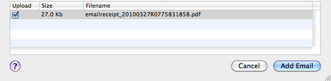
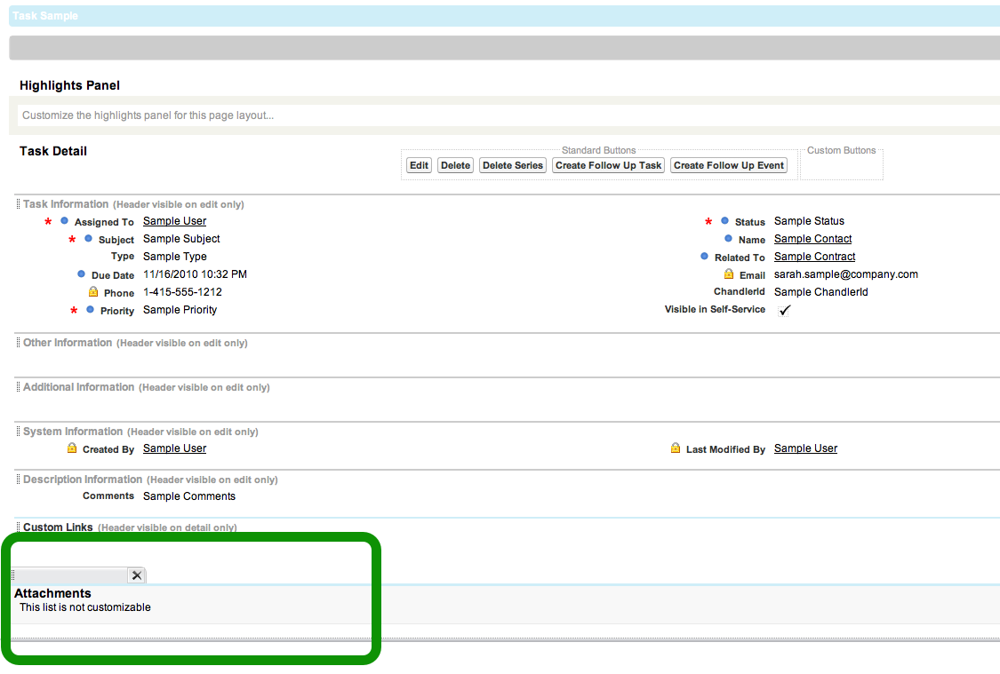

Working with Attachments
Attachments from the email are shown in the bottom pane of the add email window

When you click the add email button, any checked attachments are uploaded to Salesforce.com and associated with the created task record.
The ability to store attachments directly on the task is a new feature in Salesforce.com that was part of the Winter '11 release, if your administrator has not yet updated the task page layouts to include the attachments related list, then it may appear that the attachments were not uploaded. Please contact your Salesforce.com administrator to add the attachments related list to the task layout. (Maildrop will warn you if it detected that you don't have the attachments related list enabled,)
